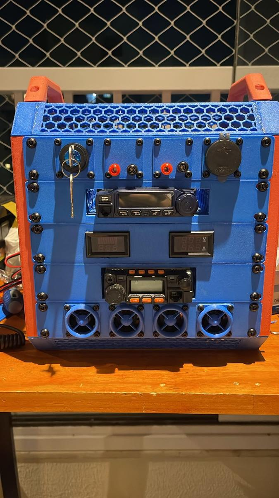

VHF · UHF · Satcom · São Paulo, BR
Opero sob o indicativo PV2KGB, em São Paulo do 16º andar. Foco em VHF e UHF com uma estação portátil inteiramente impressa em 3D. Estudando DX e FT8, e começando a explorar satcom.
